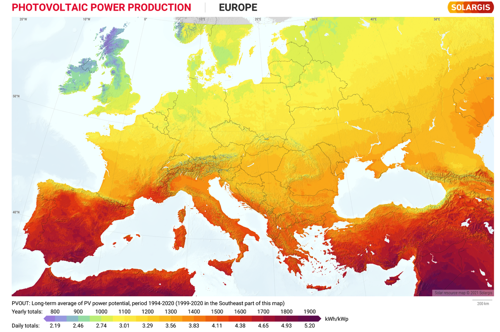
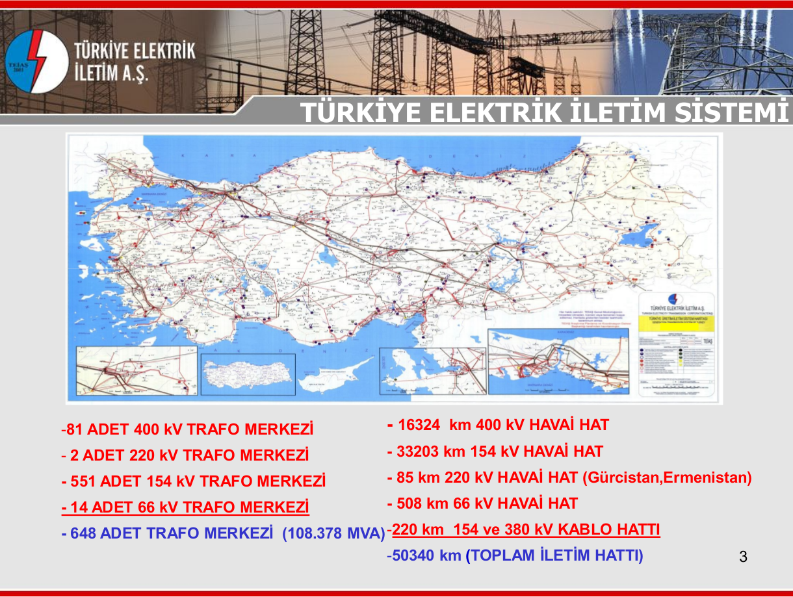

class: center, middle # EE-462 UTILIZATION OF ELECTRICAL ENERGY ## Ozan Keysan ## [keysan.me](http://keysan.me) ### Office: C-113 <span class="meta">•</span> Tel: 210 7586 --- # Where is the energy coming from? -- Brasil [700 MW Synchronous Generator](https://www.itaipu.gov.br/en/energy/generating-units) <img src="https://raw.githubusercontent.com/ozank/ozank.github.io/master/presentations/images/itaipu_hydro.png" alt="Drawing" style="width: 300px;"/> #### [Feynman on Electric Machines](https://www.youtube.com/watch?v=qhh32JYkQPk) "All wheels are turning because a big wheel is turning somewhere." --- # How it is transferred? -- <img src="./images/ee361/electric_grid.svg" alt="Drawing" style="width: 800px;"/> --- # Electric System of Turkey -- ## Capacity: 114 GW (14th in the World) -- ## Max. Consumption: 55 GW (~27 million kettles) -- ## Annual Energy Generation: 326 TWh ### (30% domestic, 70% industrial) -- ## Per Capita Consumption: 3800 kWh/year --- ### Per Capita Consumption: 3800 kWh/year <a href="http://databank.worldbank.org/data/embed/Elektrik-Tuketim/id/608e39e5?ti=y&ds=n&dd=n&tb=y&sh=n&dw=n&pr=n&inf=n&zm=y&md=y&navigator=n&theme=darkGrey&bdrClr=rgb(68,68,68)&bdrStyle=solid&bdrWidth=1px&title=Arial;14px;true;false;rgb(68,68,68);justify&exptypes=Excel,CSV,TabbedTxt">Comparison of a few countries, and their stories</a> -- <iframe src="https://ourworldindata.org/grapher/per-capita-electricity-consumption?tab=chart&country=TUR~OWID_WRL~DEU~KOR~GRC~SYR" loading="lazy" style="width: 100%; height: 500px; border: 0px none;"></iframe> --- ## Sources of Energy (Turkey, for 2023) -- ## Hydro: 20% <img src="https://www.enerjiatlasi.com/i/haber/deriner-baraji.jpg" alt="Drawing" style="width: 600px;"/> [Deriner Barajı](https://www.youtube.com/watch?v=anlwwE722C0), [Mega Structures](https://www.youtube.com/watch?v=9up2TBlY6AM) --- ## Sources of Energy (Turkey) ## Coal: 36% <img src="https://image.cnnturk.com/i/cnnturk/75/740x416/610b70dab57f150f4076a315.jpg" alt="Drawing" style="width: 650px;"/> -- ### [Kemerköy Termik Santrali](https://www.youtube.com/watch?v=g03TzI3faCM) --- ## Sources of Energy (Turkey) ## Natural Gas: 22% <img src="https://clean-coalition.org/wp-content/uploads/2018/11/GasPlant1-960x733.jpg" alt="Drawing" style="width: 500px;"/> --- ## Sources of Energy (Turkey) ## Wind: 10% ### Realtime [wind energy](http://www.ritm.gov.tr/guc/ritm_tr.html) <img src="https://bilgin.com.tr/files/tr/projeler/ruzgar-enerji-santrali/aliaga-ruzgar-enerji-santrali-3/ALIAGA1.jpg" alt="Drawing" style="width: 650px;"/> --- ## Sources of Energy (Turkey) ## Solar: 6% <img src="https://cdnuploads.aa.com.tr/uploads/Contents/2022/04/11/thumbs_b_c_4d77fcf840585bddd101aee39da30c1d.jpg" alt="Drawing" style="width: 650px;"/> #### [Konya Karapınar Kalyon Güneş Santrali](https://kalyonholding.com/enerji/ges/karapinar-ges.html), 1350 MW --- ## Sources of Energy (Turkey) ## Solar: 6% <img src="https://enerji.gov.tr//Media/Dizin/EIGM/tr/G%C3%BCne%C5%9F/g1.png" alt="Drawing" style="width: 800px;"/> ### Solar Energy Potential of Turkey ---  ### Solar Energy Potential of Europe --- # Sources of Energy (Turkey) ## [Real Time Production](https://seffaflik.epias.com.tr/transparency/uretim/gerceklesen-uretim/gercek-zamanli-uretim.xhtml) ## [Whole-Sale Energy Price](https://seffaflik.epias.com.tr/transparency/piyasalar/gop/ptf.xhtml) --- # How to Transmit Electricity? <img src="https://static01.nyt.com/images/2017/01/08/nyregion/ny101-power-slide-272G/ny101-power-slide-272G-jumbo-v3.gif" alt="Drawing" style="width: 800px;"/> Reading: [How New York City Gets Its Electricity](https://www.nytimes.com/interactive/2017/02/10/nyregion/how-new-york-city-gets-its-electricity-power-grid.html) --- ---  [Detailed Map](http://www.geni.org/globalenergy/library/national_energy_grid/turkey/graphics/teias_map.gif) --- # How electricity is consumed? -- ### 65% of the electricity in EU consumed by electric motors -- ### 46 % of the world's electricity is consumed by motors <img src="http://electronics360.globalspec.com/images/assets/073/73/1514028a-b1a3-4402-9e38-ed3b9ca19ab5.png" alt="Drawing" style="width: 700px;"/> --- # How electricity is consumed in Turkey? -- <img src="./images/ee462/turkey_consumption.png" alt="Drawing" style="width: 750px;"/> --- # How electricity is consumed in Turkey? <img src="./images/ee462/turkey_consumption2.png" alt="Drawing" style="width: 750px;"/> --- # Towards more efficient motors <img src="https://www.inverterdrivesystems.com/wp-content/uploads/2023/12/Mandatory-Efficiency-Requirements-For-Low-Voltage-Electric-Motors.jpg" alt="Drawing" style="width: 500px;"/> ### [Efficiency Classes](https://www.emsd.gov.hk/filemanager/en/content_764/Report%20on%20International%20Efficiency%20Efficiency%20Classes%20for%20Low%20Voltage%20AC%20Motors.pdf) --- ### EU enforces [premium efficiency IE3 for all motors](https://en.wikipedia.org/wiki/Premium_efficiency) by 2017. ### By 2023, motors between 75 kW and 200 kW must be [>IE4](https://www.gamak.com/en/ie4-efficiency) <img src="https://mollmotor.at/wp-content/uploads/2024/01/Vorschriften-fuer-2-4-und-6-polige-Dreiphasenmotoren-2240x1301.png" alt="Drawing" style="width: 600px;"/> **Reading material for curious students: ** [Energy-Efficiency Policy Opportunities for Electric Motor-Driven System](https://iea.blob.core.windows.net/assets/d69b2a76-feb9-4a74-a921-2490a8fefcdf/EE_for_ElectricSystems.pdf) --- # Main Elements of Electric Drives <img src="./images/ee462/electric_drives.png" alt="Drawing" style="width: 750px;"/> --- # Main Elements of Electric Drives -- <img src="./images/ee462/electric_drive2.png" alt="Drawing" style="width: 750px;"/> --- # Multi-Disciplinary Nature of Electric Drives <img src="./images/ee462/multi_disciplinary.png" alt="Drawing" style="width: 750px;"/> --- # A Review of Magnetic Circuits --- ## Simplest Electric Machine <img src="./images/emec_ex1.png" alt="Drawing" style="width:550px;"/> -- ## \\(F = B I L\\) -- ## [World's simplest train](https://www.youtube.com/watch?v=J9b0J29OzAU) --- # A Review of Magnetic Circuits ## Magnetic Circuits vs Electric Circuits -- ## $$V=IR$$ -- ## $$\mathcal{F} = \Phi \mathcal{R}$$ -- ## $$\vec{J}=\rho \vec{E}$$ -- ## $$\vec{B} = \mu \vec{H}$$ --- ## From Magnetic Circuits to Motors <img src="./images/ee462/ccore_motor.png" alt="Drawing" style="width: 750px;"/> -- ### Does it produce any torque? Ref: [Electric Motors and Drives: Fundamentals, Types and Applications, 4th Edition](http://www.emic-bg.org/files/Electric_Motors___Drives.pdf), A. Hughes, Chapter-1 --- # Mechanical-Electrical Power -- # $$T = F r$$ -- # $$P = F v = T \omega = V I $$ -- # $$W = F x = T \theta = \int V I dt $$ --- # Specific Loadings of an Electric Machine -- ## Magnetic Loading: \\(\bar{B}\\) #### Average flux density in the air-gap over the entire cylindrical surface <img src="./images/ee462/magnetic_loading.png" alt="Drawing" style="width: 750px;"/> ### [More info](http://www.eleceng.adelaide.edu.au/research/power/pebn/pebn009%20sizing%20of%20electrical%20machines.pdf) --- ## Electric loading: \\(\bar{A}\\), or \\(q\\) #### Average Ampere-turn per meter in the airgap circumference -- <img src="https://raw.githubusercontent.com/ozank/ozank.github.io/master/presentations/images/electric_loading.png" alt="Drawing" style="width: 750px;"/> --- # Typical Tangential Stress Values -- <img src="https://raw.githubusercontent.com/ozank/ozank.github.io/master/presentations/images/tangential_stress.png" alt="Drawing" style="width: 750px;"/> --- ### Can you guess the rated power of the following motors? -- <img src="http://image.made-in-china.com/43f34j00NOcQpjThbHqI/4kw-Three-Phase-Asynchronous-Squirrel-Cage-Aluminium-Induction-Electric-Motor-2HMA-132M1-6-4-.jpg" alt="Drawing" style="width: 400px;"/> -- ## 4 kW Induction Motor --- ### Can you guess the rated power of the following motors? -- <img src="./images/ee462/QE_motor_20MW.jpg" alt="Drawing" style="width: 500px;"/> -- ## 20 MW Induction Motor for [HMS Queen Elizabeth](https://en.wikipedia.org/wiki/Queen_Elizabeth-class_aircraft_carrier) --- ### Can you guess the rated power of the following motors? -- <img src="./images/enercon.jpg" alt="Drawing" style="width: 350px;"/> -- ### 7.5 MW Enercon Wind Turbine Synchronous Generator (12 rpm!) --- ## Torque and Motor Volume -- ## \\(F = B I L\\) -- ## \\(F = \bar{B} \bar{A} w L\\) -- ## For a cylindrical machine: ## \\(F = \bar{B} \bar{A} 2 \pi r L\\) -- ## Then torque becomes: ## \\(T = \bar{B} \bar{A} 2 \pi r^2 L\\) --- # Torque of an Electric Machine ## \\(T = \bar{B} \bar{A} 2 \pi r^2 L\\) ## What is \\(\pi r^2 L\\) equal to? -- ## Size of an electric machine \\(\propto \\) Torque -- ## Power becomes: ## \\(P= T \omega = \bar{B} \bar{A} 2 \pi r^2 L \omega \\) --- # Specific Power Output ## (Power per volume) -- ## \\(Q \propto \bar{B} \bar{A} \omega \\) --- # Aspect Ratio:(D/L) -- ## Different Aspect Ratio for Different Applications -- <img src="https://sbindustrialsupply.com/wp-content/uploads/imported/3/23/NEW-CLEVELAND-MACHINE-CONTROLS-BMR4045HTB000000AD-SERVO-MOTOR-PM-171927526623-2.jpg" alt="Drawing" style="width: 600px;"/> --- # Aspect Ratio:(D/L) ## Different Aspect Ratio for Different Applications <img src="https://cdn.arstechnica.net/wp-content/uploads/2015/11/PMDD.jpg" alt="Drawing" style="width: 700px;"/> --- # Discussions -- ## Electrical Loading -- ## Torque per Volume -- ## Efficiency vs Speed -- ## Rated Voltage -- ## Overloading --- ## You can download this presentation from: [keysan.me/ee462](http://keysan.me/ee462)